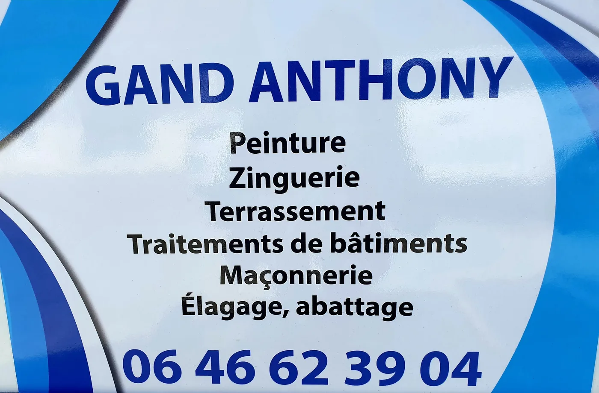

À propos
Un artisan couvreur installé à Courlaoux depuis 2009
Je m’appelle Anthony Gand. Couvreur zingueur, je travaille seul, de la visite à la dernière tuile : c’est moi qui vous réponds, et c’est moi qui monte sur votre toit.
Portrait d’Anthony Gand sur un chantier : en tenue de travail, sur un toit en tuiles ou au pied de son échelle, regard vers l’objectif, lumière de jour.
Mon métier
J’ai créé mon entreprise en 2009 à Courlaoux, dans le Jura, pour transmettre ma passion du métier du bâtiment et mon goût pour la création et la conception de vos travaux. Couverture, étanchéité et zinguerie : les travaux de toiture sont le cœur de mon activité.
Je suis qualifié pour la pose des gouttières en zinc, en cuivre ou en PVC, selon vos besoins. Vous pouvez aussi faire appel à moi pour améliorer l’étanchéité et l’isolation de votre toiture.
Tous mes travaux sont couverts par une garantie décennale et une responsabilité civile, et chaque devis est gratuit.
- 2009
- création de l’entreprise
- 5,0/5
- 21 avis Google
- 10 ans
- de garantie décennale
- 5
- départements couverts
Avis Google
Ce que disent mes clients
« Nous avons contacté l’entreprise dans l’urgence suite aux intempéries. M. Gand a été extrêmement réactif et a assuré des réparations de qualité, avec en plus des conseils et des informations préventives. Professionnel à recommander. »
Avis Google · il y a un an
« Un nettoyage parfait de notre toiture. Artisan à recommander : respect du cahier des charges et du délai ! Travail minutieux, y compris le nettoyage de fin de chantier… En plus, personne sympathique et pas en reste pour nous donner des conseils ! »
Avis Google · il y a 3 ans
« Je recommande à 100 % : travail clair, net, rapide, très professionnel. Très belle rencontre, merci. Et pour vos travaux, ne cherchez pas plus loin ! »
Avis Google · il y a un an
Sur le terrain
Mes autres savoir-faire
La toiture est le cœur de mon métier, mais mon utilitaire le dit : je réalise aussi la peinture, le terrassement, les traitements de bâtiments, la maçonnerie, ainsi que l’élagage et l’abattage.


Devis gratuit et détaillé
Parlons de votre toiture
Du lundi au vendredi, de 7 h 30 à 20 h 30, je réponds moi-même au téléphone. Décrivez-moi vos travaux : je vous remets un devis gratuit et détaillé.